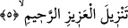
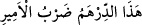

4. Doğru yol üzerindesin.
“Doğru yol üzerindesin.” Yâni cennete, kurbete/Hakk’a yakınlığa, rızâya, lezzete ve
likaya/Hak ile buluşmaya ulaştıran tevhid ve şer’î esaslar üzere yerleşip karar kılmış
durumdasın. Başka bir yerde de “Zira sen, hakîkaten dosdoğru bir yoldasın.” (el-
Hacc, 22/67) buyrulmuştur. Yani sen doğru yol, hakiki din, pak bir şeriat ve beğenilmiş
bir sîret üzere gönderilmiş peygamberlerdensin. Nitekim Keşfü’l-esrâr’da böyle
geçmektedir.
Eğer “Doğru yol üzeresin” demeye ne gerek var? Peygamberlerin doğru yol üzere
oldukları zaten malumdur.” denilirse, şöyle cevap veririm: “Sen şüphesiz
peygamberlerdensin.” sözü buna zorunlu olarak delâlet etse de bunun faydası açıkça
şeriatı istikametle vasfetmektir. Bu durumda bir nizamda iki vasıf bir araya getirilmiştir.
Sanki Allah Teâlâ: ‘Elbette sen istikameti sabit olan bir yol üzere sabit olan
peygamberlerdensin’ buyurmuştur. Hz. Peygamber (s.a.)’in yollar arasında başka bir
yolun kendisine denk olmadığı, doğruluk vasfı tam olarak kavranılamayan bir yol üzere
gönderilmiş olduğuna delalet etmesi için Allah Teâlâ “__WORD__ (yol)” kelimesini nekre
olarak getirmiştir. Nekrelik burada tâzim içindir. Şu halde bu kelimenin nekre yapılması
şereflendirmek içindir.
et-Te’vîlâtü’n-Necmiyye’de der ki: “Bu âyetlerde Allah Teâlâ Hz. Peygamber
(s.a.)’in efendiliğine/önderliğine (siyâdet), efendilikte peygamberlerden hiç kimsenin
O’nun rütbesine ulaşamamış olduğuna işâret etmektedir. Çünkü Allah Teâlâ hakîm olan
Kur’an’a yemin ederek Allah’a yakınlıkta (kurb) iki yay mesafesi kadar hatta yakınlığın
(kurb) kemâline daha yakın olma hususunda O’nun doğru yol üzere gönderilmiş
peygamberlerden olduğunu ifade etmiştir. Nitekim O (s.a.): “Benim Allah ile öyle bir
vaktim vardır ki o vakitte beni mukarreb bir melek yahut mürsel bir nebî ihâta
edemez/bu duruma muttali olamaz.”[100] buyurmuştur. Çünkü her gönderilen
peygamberin Allah’ın yolu olan sırât-ı müstakîm/doğru yol üzere belli bir makama
kadar bir seyri vardır. Nitekim Hz. Peygamber (s.a.) mi’rac gecesinde her semada bazı
peygamberleri gördüğünü haber vermiş ve “Ben altıncı kat semada Musa (a.s.)’ı
gördüm.”[101] buyurmuştur. Yine Peygamberimiz (s.a.) yedinci semada İbrahim (a.s.)’ı
görmüştür. Onları geçip mertebesinin kemalinde âlemlerden hiç kimsenin ulaşamadığı
bir mertebeye ulaşmıştır.
5. (Bu Kur’an) üstün ve çok merhametli Allah tarafından indirilmiştir.
“__WORD__ kelimesi, medih için olup indirilmiş mânâsına masdardır. Nitekim Araplar: “
(Bu dirhem emîr tarafından bastırılmıştır)” derler. Bu sözde “